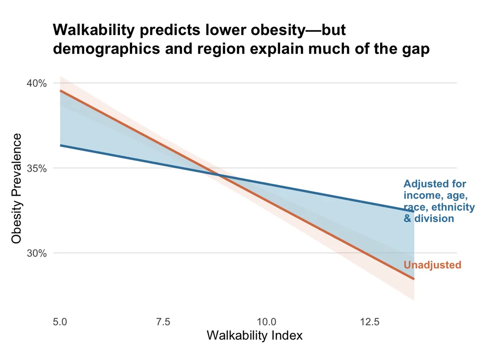
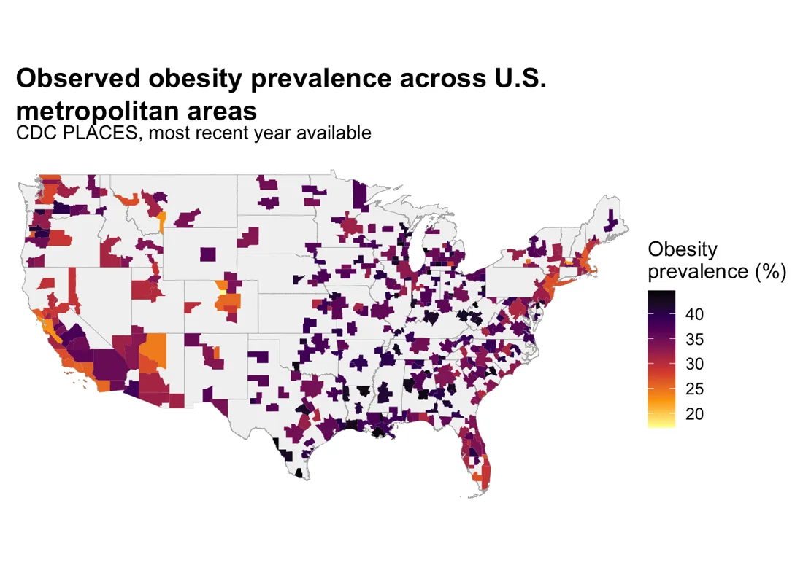
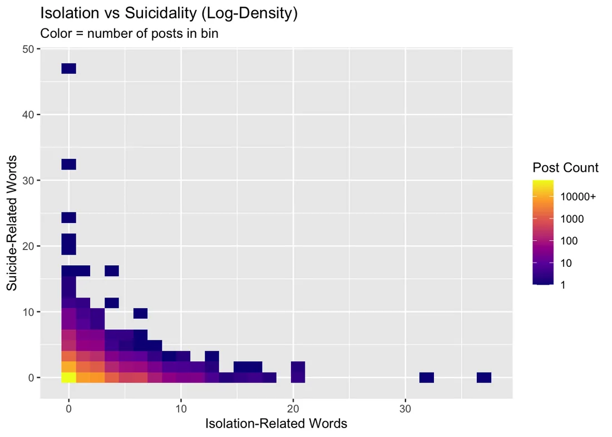

Experience
Data Entry Technician
County of Orange Social Services Agency
Support 300+ Spanish-speaking clients across programs, help clients apply for CalFresh and Medi-Cal, and wrote process guides now used by 15+ staff.
Research Assistant II
CSU Fullerton Social Science Research Center
Worked on surveys of up to 20,000 respondents, stress-tested ambiguous survey items before fielding, and presented recommendations to project leads.
Legal Assistant
Law Offices of Ilan N. Rosen Janfaza
Reviewed and summarized large document sets and supported discovery and client intake.
Writing Tutor
Mt. San Antonio College Writing Center
Gave writing instruction to 1,300+ students.
Education
M.S. Data Analytics and Policy
Johns Hopkins University
B.A. Political Science and Philosophy
Cal Poly Pomona
Senior thesis on informed consent and paternalism in public bioethics.
Analysis
Who Is Paying for Data Centers?
HopHacks 2026, 1st place. State-fixed-effect regressions across about 3,090 matched counties, built from five public datasets (IM3, ACS, BEA, DOE LEAD, USDA). Counties with data centers show higher median incomes, home values and rents.
Policing After PredPol in Los Angeles
R pipeline and Shiny dashboard comparing arrest-to-crime ratios before and after LAPD changed programs, with a negative binomial GEE model. Enforcement fell overall, but least in majority Black and Latino tracts.
Code on GitHubWalkability, Commuting and Obesity
Fixed-effects regression and mediation analysis across 364 U.S. metro areas: about 26% of the walkability-obesity link runs through walking to work.


Isolation Language and Suicidality on Reddit
85,000+ posts across six subreddits, with a reproducible renv and Quarto pipeline. No independent association after adjustment.

Software
launch-runner: safe process execution for Python
A family of libraries built as ports and adapters, so code that asks for a process never depends on how it starts. Every operation returns an explicit result instead of raising, never flashes a Windows console window, and kills the whole process tree on timeout. commandport ships a scan that fails the build when code bypasses subprocess.
Obsidian plugins
A suite of TypeScript plugins for note-taking workflows, including redirects and disambiguation, heading navigation, and list formatting that keeps git diffs clean.
semantic-diff
A VS Code extension for prose that diffs and stages changes by clause instead of by line.
knowledge
A personal SQLite knowledge base with a numbered ingest pipeline and a command-line interface.
Skills
- Tools
- R (tidyverse, tidycensus, sf, Shiny, Quarto, renv), Python, SQL, Excel, Tableau, Git
- Methods
- OLS and fixed effects, mediation analysis, survey design and pretesting, public-data API pipelines, spatial mapping, reproducible research
- Domains
- Housing and eviction, energy economics, inequality, urban and regulatory policy, social services